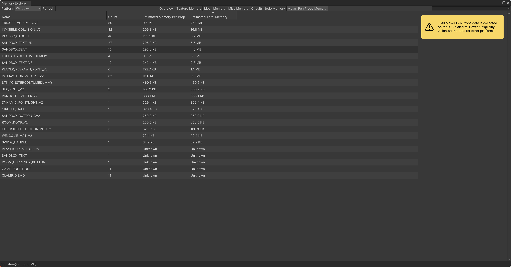

Rec Room
Introduction
Rec Room is a cross-platform online multiplayer game that blends user-generated content (UGC) with interactive social experiences. Players can connect across a wide range of virtual spaces, from casual hangout rooms to co-op quests.
It supports Steam, PC standalone, iOS, Android, Quest VR, Xbox, PS4, PS5, and Nintendo Switch, with weekly updates shipped simultaneously across all nine platforms.
I worked at Rec Room from January 2023 to August 2025 as a Gameplay & UI Software Engineer.
Contribution: Gameplay UGC Tools & Chips
Developed over 30 UGC chips and tools to support the creation of three first-party games (Make it to Midnight, My Little Monster, Run the Block). These chips enabled fundamental player interactions and gameplay mechanics in UGC rooms, and within the first three months, 37% of the top 100 UGC rooms had adopted them. Some key tools include:
Interaction Volume: A trigger system that allows creators to define interactive volumes in a room, supporting both standard and hold interactions with customizable durations. Broadly used in Make it to Midnight (a PvP, Dead by Daylight–style game) for features such as opening gates and releasing players from jail.

Dialogue UI: A customizable in-world dialogue UI system that lets creators configure text, colors, and buttons to build NPC interactions. Widely used in My Little Monster to power its NPC dialogue system.

Inventory Animation Chip: Added visual and haptic feedback to inventory slots. For screen players, slots pulse with a throbbing animation; for VR players, controllers vibrate to prompt interaction. Broadly used in Run the Block.
Custom Footstep Sound Chip: Allowed creators to assign custom footstep sounds based on floor material.
Various 3D Math Chips: Built utilities such as AABB Contains Point, Vertical Cylinder Contains Point, and Closest Point on Line Segment, enabling designers and players to handle essential 3D math logic.
Contribution: Mobile Makerpen UI
Contributed to the redesign of the MakerPen mobile UI—Rec Room’s in-game creation tool—making it more intuitive, reducing input complexity, and significantly improving productivity for mobile creators. The new interface allowed players to more easily create, move, rotate, delete, clone, and recolor objects directly on mobile devices.

Contribution: Magnetic Snapping
Implemented Magnetic Snapping, a new object alignment system that enables players to snap objects together via magnetic points, making in-game building more intuitive. I was responsible for implementing all the underlying 3D math for this feature.

Contribution: Unity Editor Tool
Created a Unity editor tool to analyze and visualize memory usage of in-scene UGC chips and tools, helping designers and engineers to quickly identify and resolve memory bottlenecks. 
Contribution: Memory Optimazation
Optimized memory usage across three first-party games (Make it to Midnight, My Little Monster, Run the Block). Diagnosed memory leaks using Memory Explorer and Heap Explorer.Reduced memory consumption by implementing lazy loading for Addressables and platform-specific asset loading.
Results: Achieved ~10% reduction in memory usage and a ~5% decrease in crash rate on low-end mobile devices.